Overview
Self-Introduction (自介)
How To Tell A Fake DS From A Real One? (定應資料科學家)
What Do DS Do All Day? (資料科學家的工作內容)
A Working Example From My Recent Project (專案與範例)
Becoming A Data Scientist (如何成為ㄧ位資料科學家)
Parting Thoughts (給大家的小小建議)
Open Q&A (公開問答)
Remember, Sample Size N = 1
Provide Assessments of Variability
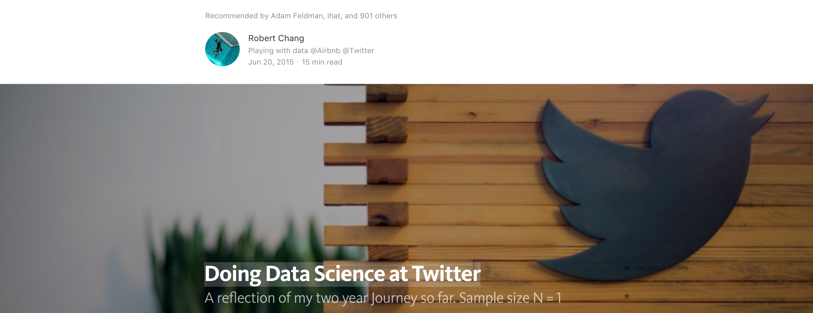
自我介紹
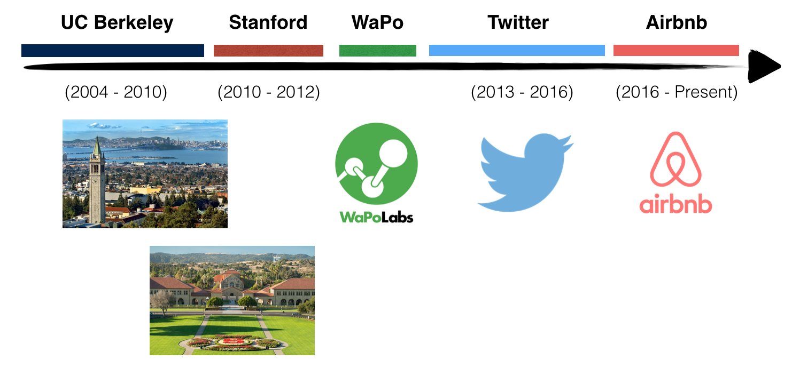
A Brief History Of Data Science
The term "Data Scientist" was coined by Jeff Hammerbatcher and DJ Patil circa 2008.
Jeff was leading the first data team at Facebook then, and DJ Patil was leading the data team at Linkedin.
A Brief History Of Data Science
"Around 4Q05 they decided to establish a 'reporting and analytics' function that was more like traditional DW/BI, and to hire a 'research scientist' to do things like identify and evaluate algorithms for news feed ranking"
"I was hired in 1Q06 with the same title 'research scientist', but my role quickly evolved into supporting the functions of the reporting and analytics group. Some time in 3Q06, Adam D'Angelo returned and we discussed changing the two groups to be focused on 'Data Infrastructure' and 'Data Analytics', and in 4Q06 (I think) we merged them into the 'Data Team'."
Since then, explosive growth in (job) opportunities
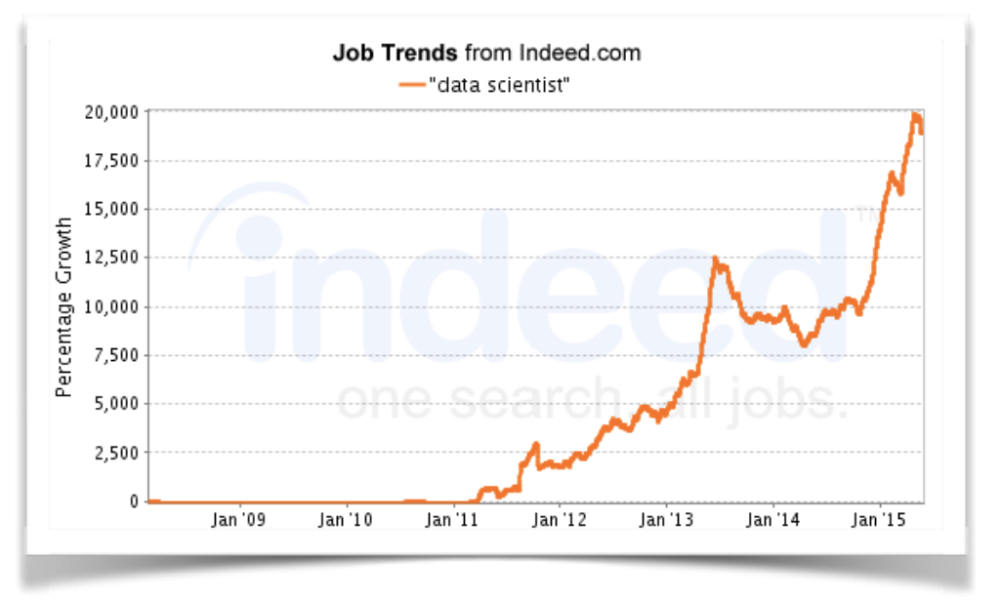
Hype All Over Mainstream Media
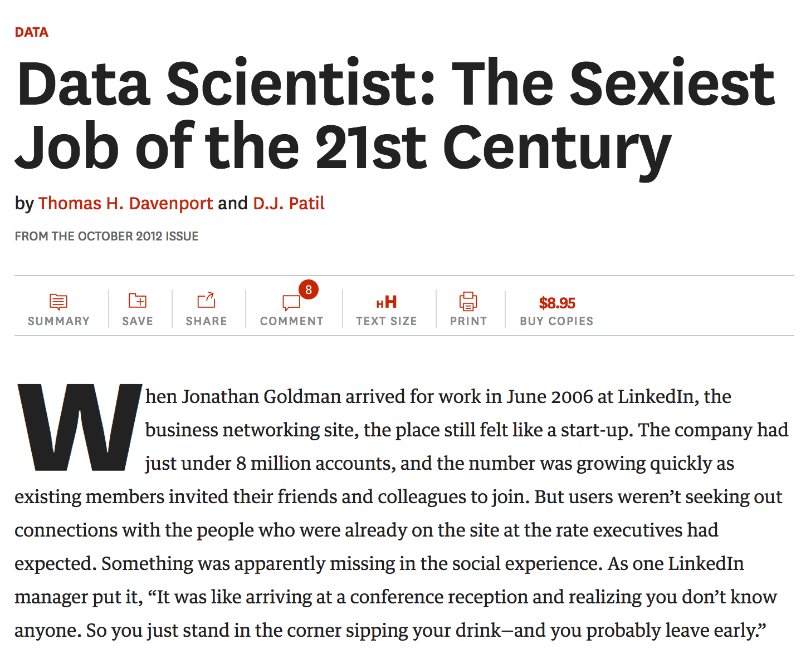
其實這個領域還很新
我的比喻
跟 Software Engineering 剛開始ㄧ樣
初期所有人基本上都統稱 programmers, 工作與專業上並還沒有那麼細的分工.
但當領域越來越成熟以後, 慢慢出現分工
front-end, back-end, sys-ops, dev-prods ...etc.
我的預測是 Data Science 也是ㄧ樣, 慢慢我們會有更清晰的分類和歸類 (Type A v.s. Type B).
But as of now, Data Science is still a nascent field.
Working Definition of a DS?
資料科學家的定義
How to tell A Fake Data Scientist From A Real One?
你在哪裡工作啊?
"A data scientist is a data analyst who lives in San Franciso, California, working in Tech"
你用什麼工具啊?
R, Python, Hadoop, Map-Reduce, Parallel Computing ...etc
所以到底如何定義呢?
"All models are wrong but some are useful" - George Box
"All definitions are imperfect but some are insightful"
My Favorite Definition
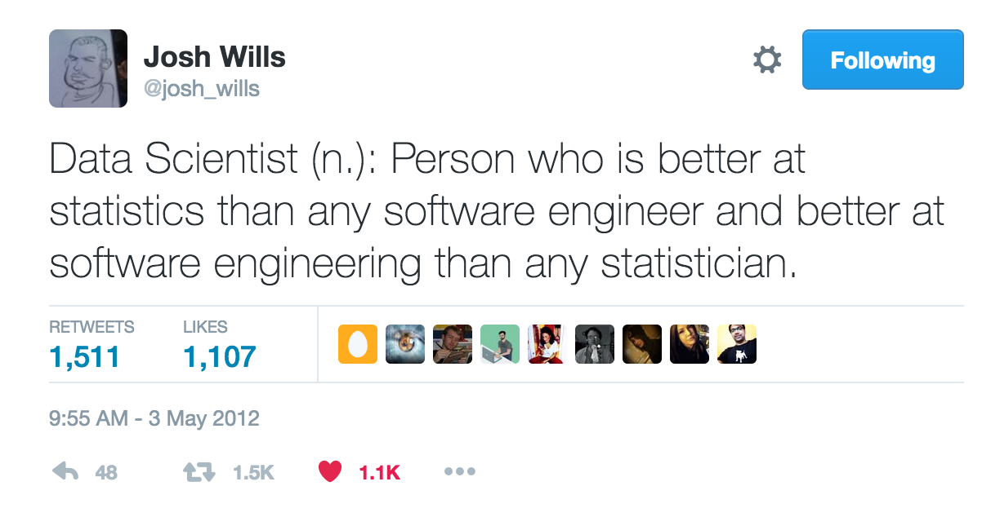
The Data Science Venn Diagram
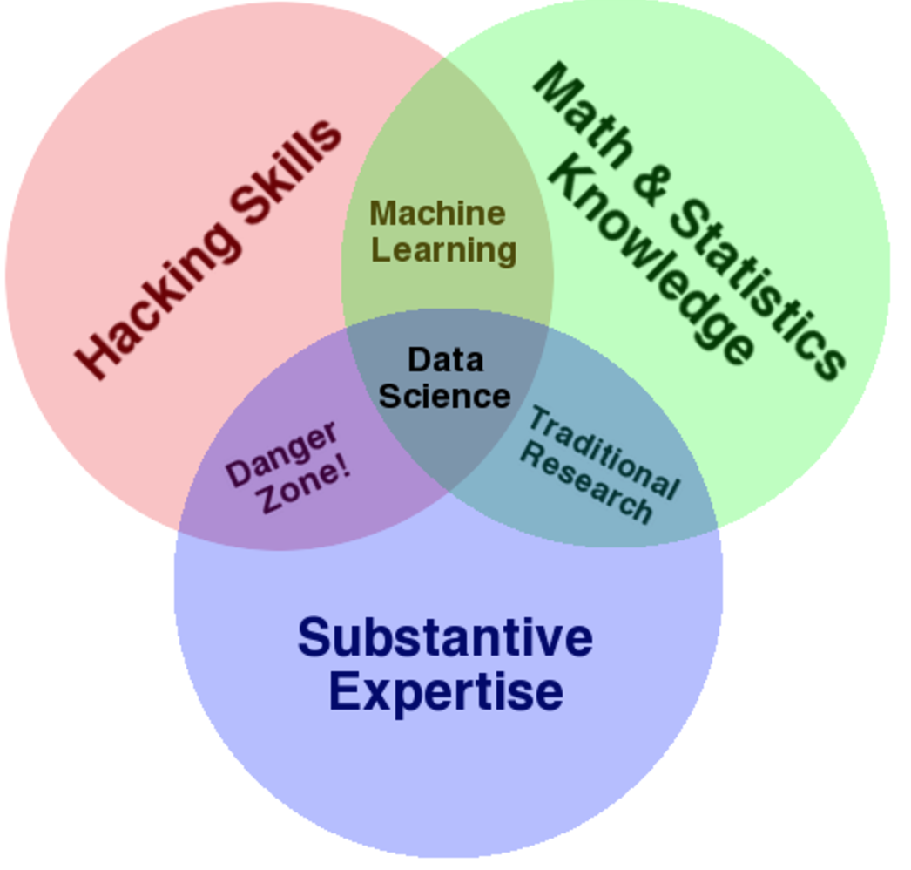
Data Scientists Come From All Kinds Of Background
Some have advanced degree, others don't. Some from CS/Stats, others from Social Science
But always everyone has good statistical training, and know how to use computational thinking to solve problems
What Do Data Scientists Do All Day?
工作內容範疇到底是什麼呢?
Data Scientist 好比ㄧ位廚師
廚師的主要工作內容是什麼？
廚師的主要工作內容是作菜, 目的是做出讓人感動的料理
這代表他/她 需要知道食材的來源, 如何存放與保持它們的新鮮度
他/她 需要花精神擺盤, 襯托食物的美味
有時候, 你甚至必須知道怎麼樣整理 你的冰箱, 或是要買哪ㄧ牌的冰櫃
Data Scientist 好比ㄧ位廚師
Data Scientists 的主要工作內容是使用資料來做更好的決策跟產品
這代表他/她 需要知道資料的來源, 如何存放與保持它們的正確度
他/她 需要花精神思考如何表達找到的 insights, 如何視覺化 和說服
有時候, 你甚至必須知道怎麼樣整理你的 Data Warehouse, 或是用哪ㄧ種 Technology stack
Analogy
資料 = 食材
正確度 = 新鮮度
Visualization & Presentation = 擺盤
Technology Stack = 冰箱 & 冰櫃
延續這比喻: Data Scientists 的廚房大概長這樣子
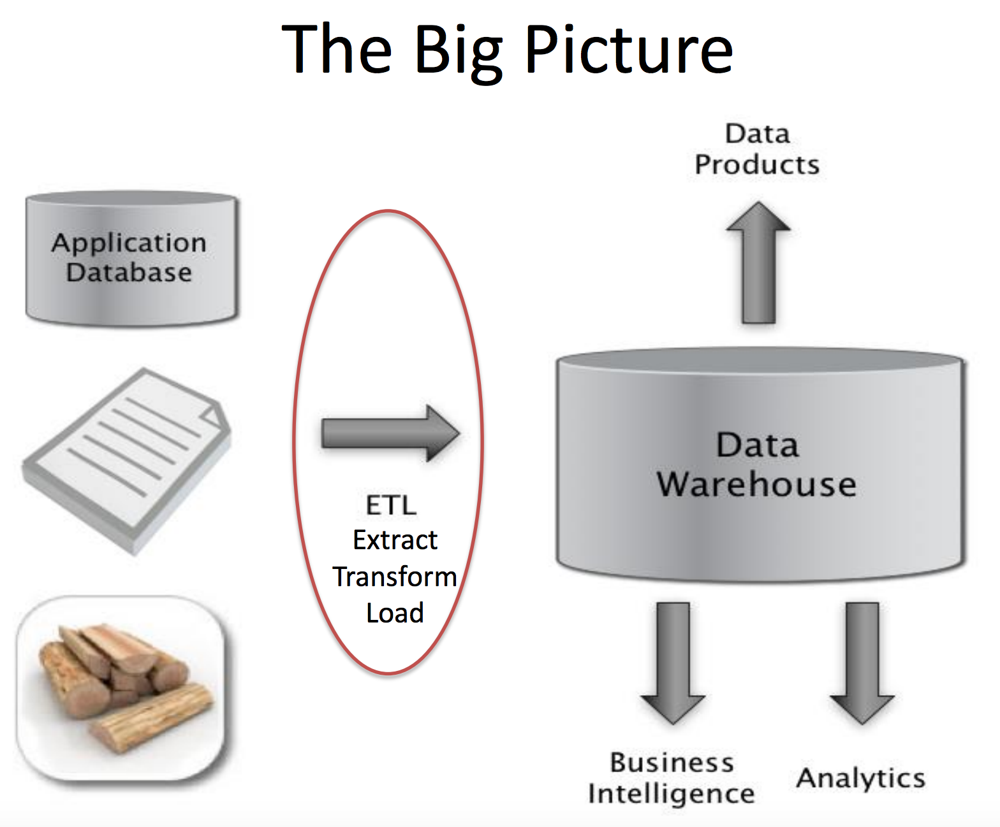
Data Infra @ Twitter
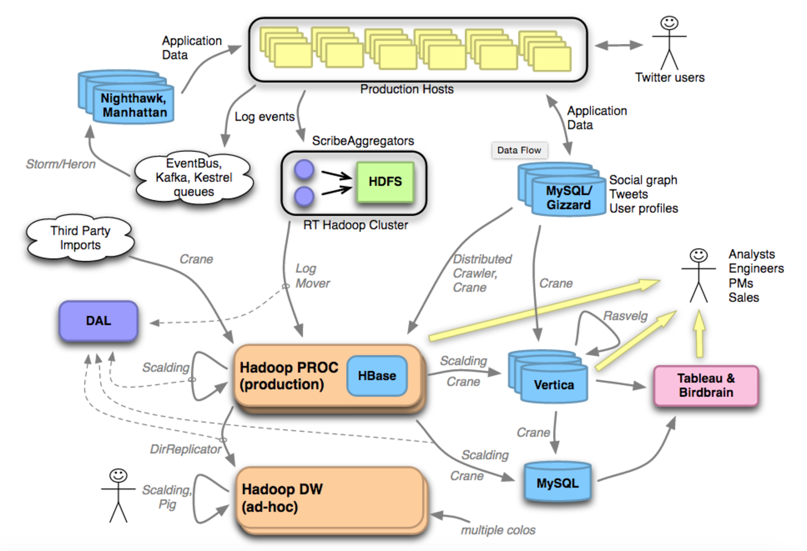
Data Infra @ Airbnb
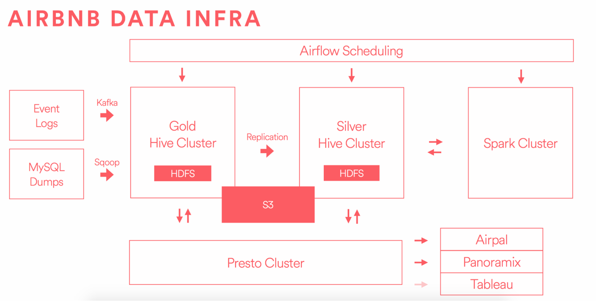
工作範疇大致的歸類
Product Analytic (產品資料分析)
Building Data Pipeline (建立資料流程)
Experimentation (跑實驗)
Modeling (建立模型)
Win people's heart (推銷與溝通)
工作範疇大致的歸類
Product Analytic (產品資料分析)
Building Data Pipeline (建立資料流程)
Experimentation (跑實驗)
Modeling (建立模型)
Win people's heart (推銷與溝通)
Product Analytics
產品資料分析
One of the unique aspects of working for a consumer technology company is that whenever a user interacts with the product, we record useful data and metadata so we can analyze them to improve the product.
Logging
Instrumentation
A Very Basic Logging Example
import logging
logging.basicConfig(format='%(asctime)s %(message)s', datefmt='%m/%d/%Y %I:%M:%S %p')
logging.warning('is when this event was logged.')
# 12/30/2016 11:20:36 AM is when this event was logged.
Sources of Logs
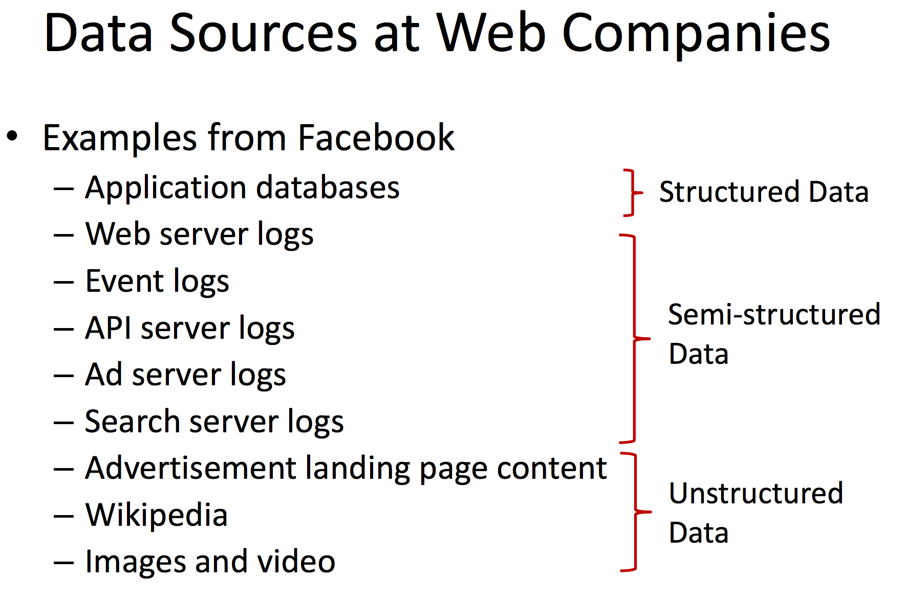
Examples Of Product Analytics
1. Why Is There An Explosive User Growth This Month?
2. What's The Average Retention For Product X? How Much Time Do They Spend Onsite?
3. What Kind Of Guests Tend To Leave Bad Reviews For Their Trips?
4. Are People Able To Find The Listings That They Want?
Product Analytics
產品資料分析
Generating insights through product analysis is an iterative process. It requires challenging the questions being asked, understanding the business context, and figuring out the right dataset and the right questions to ask.
產品資料分析所需要的能力
1. Logging and Instrumentation. Identifying Data Gaps. Establish good relationships with engineers
2. Ability to navigate and identify relevant datasets and how to use them
3. Understand different types of analyses and get better at time estimates on how long or difficult they will take
4. Know your query language (SQL). Typical data munging skills using R or Python
工作範疇大致的歸類
Product Analytic (產品資料分析)
Building Data Pipeline (建立資料流程)
Experimentation (跑實驗)
Modeling (建立模型)
Win people's heart (推銷與溝通)
Building Data Pipelines
建立資料流程
Have you heard of the operation | (pipe) from Unix?
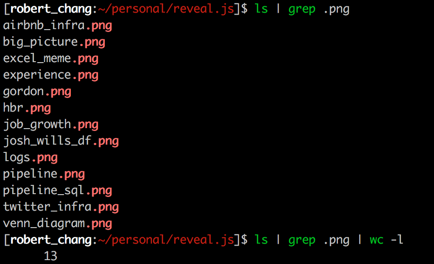
Building Data Pipelines
建立資料流程
A data pipeline is nothing but a series of operations streamed together, which helps us to automatically capture, munge, and aggregate data so it can be used on a recurring basis.
Remember This Picture!
Building ETL Job
Many open-source tools out there: Luigi (Spotify), Pinball (Pinterest), Airflow (Airbnb) ...etc, or just use plain old Cron

A Real Life Example
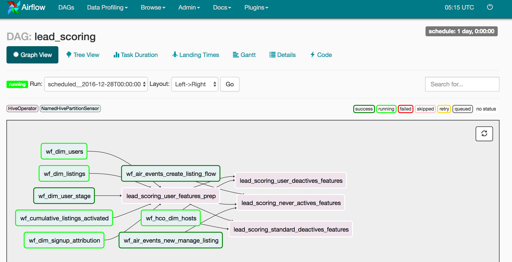
An ETL Job is often represented as a DAG (Directed Acyclic Graph), the graph consists of tasks/nodes, and each task perform a specific set of data operations
Each task executes a specific set of operations
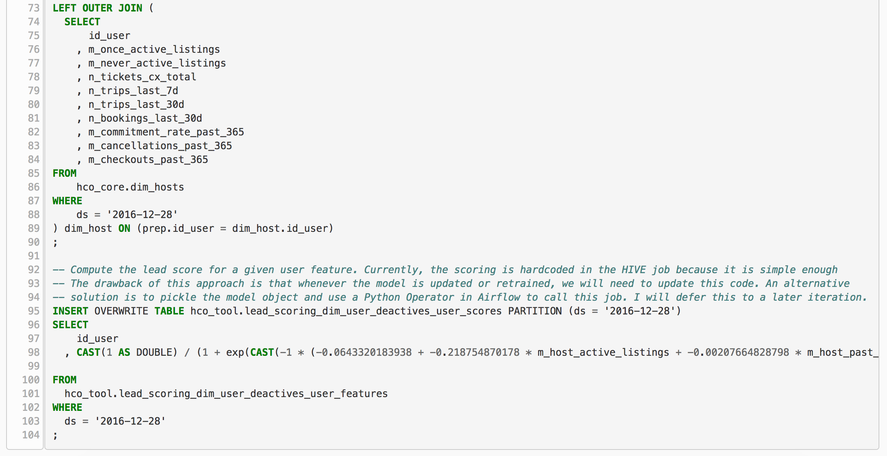
The end result is that we have a reliable batch job that computes the same metrics we want everyday
Why Bother Building Data Pipelines?
Jobs can now be run automatically, the data produced can be used to power dashboards so more users can consume your data/results. (自動化)
A subtle but more important point, this is a great learning process to pick up engineering best practices such as Don't repeat yourself, Modularization, Abstractions. (學習 Software Engineering)
It provides the foundation for building more specialized pipelines such as Machine Learning or A/B testing.
建立資料流程所需要的能力
1. Version control - the most popular by far is Git
2. Learn how to do code reviews and provide feedbacks effectively
3. Know how to test, dry-run, and debug when job fails
4. Dependency management, Scheduling, Resource Allocation, Monitoring, Error Reporting, Alerting
工作範疇大致的歸類
Product Analytic (產品資料分析)
Building Data Pipeline (建立資料流程)
Experimentation (跑實驗)
Modeling (建立模型)
Win people's heart (推銷與溝通)
Experimentation
跑實驗
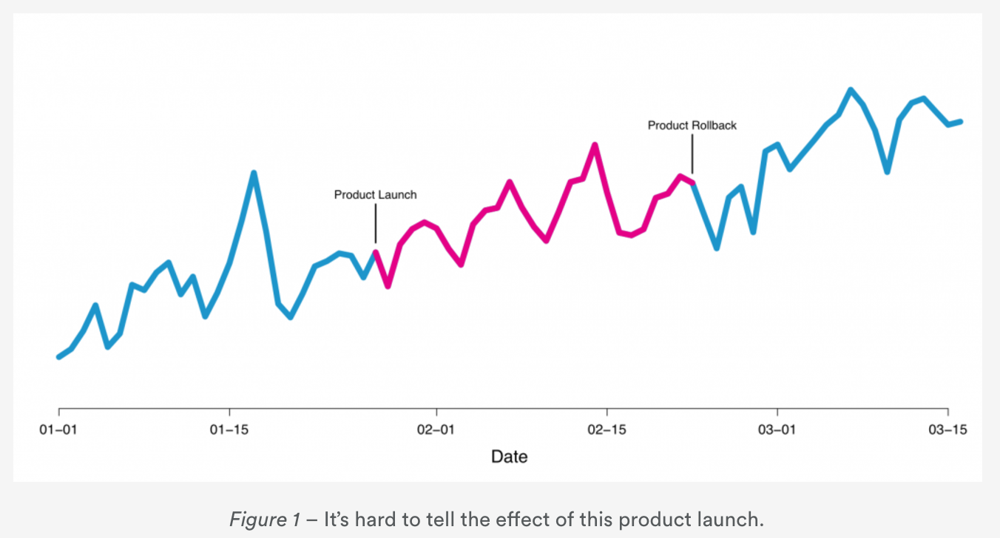
Experimentation
跑實驗
How to tell if the products we built/want to build is beneficial to the users?

Experimentation
跑實驗
Direct a small % of user traffic to the new experience, and compare their behaviors to those who continued to see the old experience (the control group) — this is known as A/B testing, where we get to test which variant, A or B, is better.

Experimentation
跑實驗
To separate noise from real signals, we need hypothesis testing and statistical thinking
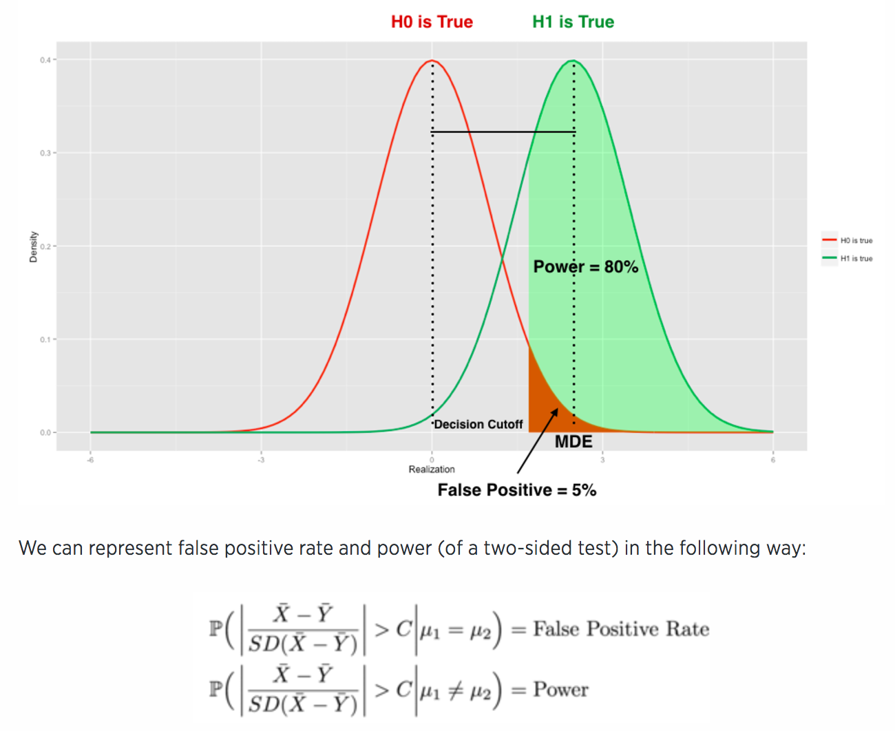
Experimentation
跑實驗
We keep track of p-value and and the treatment effect to understand the overall impact

Experimentation
跑實驗
It's worth pointing out that, because we built an A/B testing pipeline for the company, we don't have to do everything by hand :)
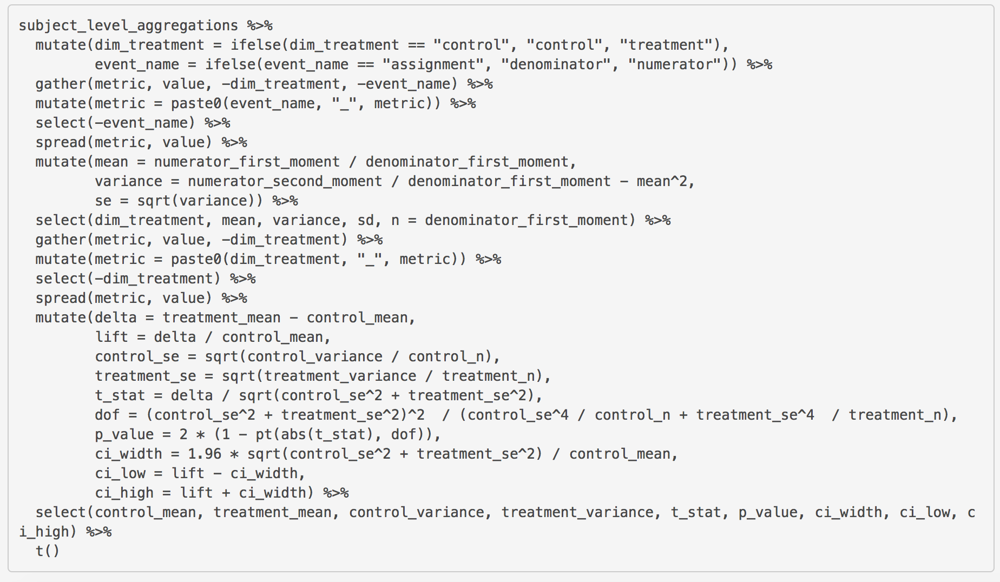
Experimentation
跑實驗
The ability to run experiments breaks a lot of the limitation in traditional social science research, where techniques such as causal inference are heavily leveraged when RCE is not possible.
The ability to run massive experiment to improve product and decision making is, in my opinion, one of the most scientific aspects of our work.
跑實驗所需要的能力
Hypothesis Testing: Statistical test, p-values, statistical significance, power, effect size, multiple testing
Pitfalls of Experimentation: Carryover effect, metrics cherry-picking, data dilution, bucket anomaly
When a randomized controlled experiment is not possible, use Causal Inference techniques - difference in difference, instrumental variable, regression discontinuity design, market level experiments ...etc
工作範疇大致的歸類
Product Analytic (產品資料分析)
Building Data Pipeline (建立資料流程)
Experimentation (跑實驗)
Modeling (建立模型)
Win people's heart (推銷與溝通)
Modeling
建立模型
Broadly speaking, when we refer to modeling, we mean building "Machine Learning" (機器學習) models or "Predictive Models"
These models are often used to power data products or are used as inputs for other complex systems
Examples In The Industry
People You May Know (Facebook)
Customers Who Bought This Item Also Bought (Amazon)
While You Are Away (Twitter)
Pricing Tips (Airbnb)
Example @ Airbnb: Pricing Tips

Example @ Airbnb: Pricing Tips
Additive Model: Outcome is the Probability of Booking, as a function of many features, location, listing, prices ...etc

Listing Revenue Prediction
Goal is to develop a general for the accurate prediction of individual customer lifetime value. CLTV predictions would help us to better identify high value hosts, to set more data informed CPA targets, and to calculate program efficiency more precisely.
In other words, if you have a new listing on Airbnb, can we predict NOW how profitable/attractive in would be in the year ahead?
Listing Revenue Prediction
Step 1: Define the Training Data (label, features)
Step 2: Perform Exploratory Data Analysis to understand what features correlate with revenues?
Step 3: Write Data Pipeline to Compute/Generate Features
Step 4: Train Machine Learning Models
Step 5: Evaluate Model Performance
Step 6: Rinse and Repeat Until We have a "good model"
Step 1-3: Defining And Creating Training Data
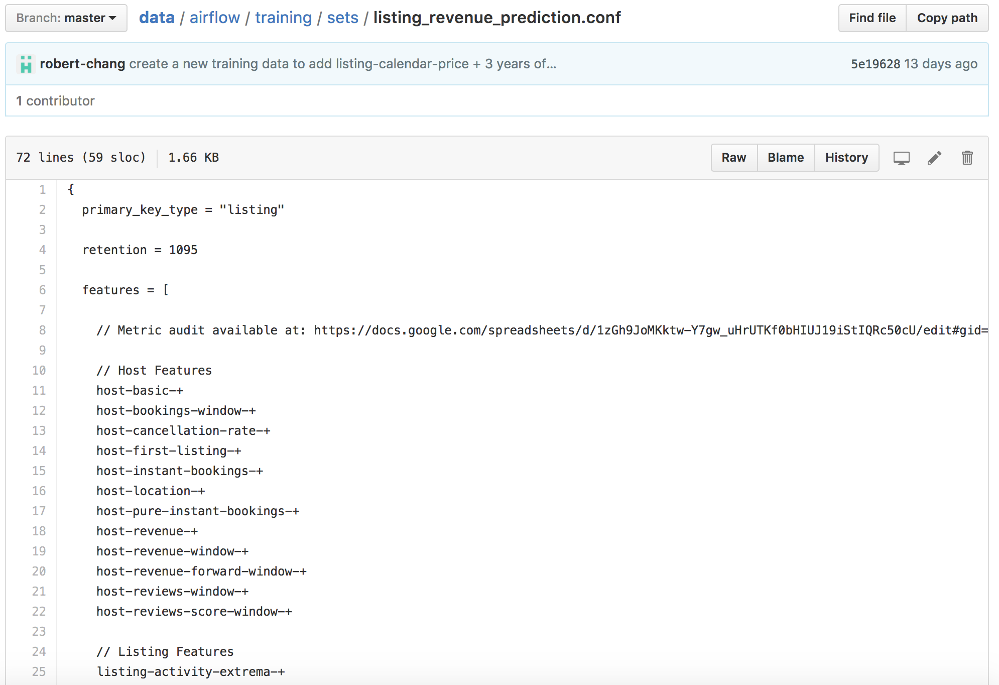
Step 4: Train Machine Learning Models
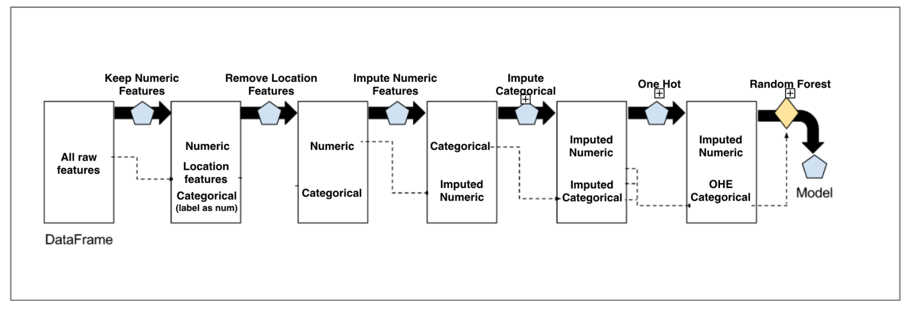
Step 4: Train Machine Learning Models
from sklearn.pipeline import Pipeline
from sklearn.ensemble import RandomForestClassifier
rf_pipeline = Pipeline([
('transformer_keep_only_numeric_columns', NumericColumnExtractor(['float64', 'int64'])),
('transformer_remove_location_features', FeatureRemover(rm_cols)),
('transformer_impute_numeric_features', CustomNumericImputer(numeric_cols)),
('transformer_impute_categorical_features', CustomCategoricalImputer(cat_cols)),
('transformer_one_hot_encoding', CustomOneHotEncoder(cat_cols)),
('transformer_remove_redundant_categorical_features', FeatureRemover(cat_cols)),
('estimator', RandomForestClassifier(n_estimators = 200, n_jobs = -1))
])
...
import matplotlib.pyplot as plt
print "Confusion Matrix:"
print metrics.confusion_matrix(rf_actual_labels, rf_prediction_labels)
print "\n"
print "Classification Report:"
print metrics.classification_report(rf_actual_labels, rf_prediction_labels)
print "\n"
fpr, tpr, thresholds = metrics.roc_curve(rf_actual_labels, rf_prediction_probs)
roc_auc = metrics.auc(fpr, tpr)
plt.plot(fpr, tpr, lw=2, color='blue', label='AUC = %0.2f)' % (roc_auc))
plt.plot([0, 1], [0, 1], linestyle='--', lw=2, color='k', label='Baseline')
plt.xlim([-0.05, 1.05])
plt.ylim([-0.05, 1.05])
plt.xlabel('False Positive Rate')
plt.ylabel('True Positive Rate')
plt.title('ROC Curve - Random Forest Classifier Model')
plt.legend(loc="lower right")
Step 5: Evaluate Model Performance
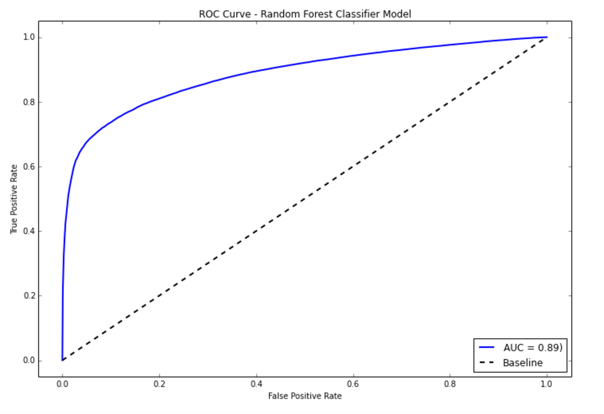
建立模型
Pattern Recognition: Identifying problems that can be solved using modeling technique
All the basics of modeling and ML: Exploratory data analysis, building features, feature selection, model selection, training/validation/testing, model evaluation
Productionization: all the things mentioned above about data pipeline. Set up your ouput so it can be query by different people and services
Becoming A Data Scientist
我要如何才能成為ㄧ位資料科學家呢?
Becoming A Data Scientist
Perform Due Dilligence
Explore more before you jump in, talk to people, learn from their experiences
大學的目的就是要多方探索! 多多學習!
去跟你欣賞的學長姊, 老師, 業界前輩們討教, 他們為何會走上這條路, 成功的秘訣是什麼?
花時間去做 informational interview, 你會找出基礎技能是什麼,甚至是成功的脈絡
Becoming A Data Scientist
Focus On the Fundamentals
基礎功真的很重要, 避免好高騖遠的心態
什麼是基本功呢: Math, Statistics, Computer Science 基礎課程.
ㄧ定要學好英文! ㄧ定要學好英文! ㄧ定要學好英文!
(戰) 不要 Double Major, ㄧ次把ㄧ件事做好不只 high leverage, 對長期 career track record 也比較有幫助
Becoming A Data Scientist
Build Your Own Learning Projects
當你知道你想成為什麼樣的 Data Scientist, 也知道基本功是哪些時...
Set aside time to work on your own projects, learn by doing
Practice deliberately, get feedback
反省自己還有哪裡可以進步
"A little bit of slope makes up for a lot of y-intercept" - John Ousterhout, CS Professor @ Stanford
Becoming A Data Scientist
Never Stop Improving
當你越來越強時, 你會有越多機會接觸厲害的人
當你越來越強時, 你會有越多機會去更好的環境
Don't stop there, find the best people, don't be ashame to ask for help!
Becoming A Data Scientist
Give Back
當你累積ㄧ定的實力的時候
記得感謝那些幫助你的人
更重要的是,幫助那些跟你在ㄧ樣道路上, 但慢你幾步的人
Becoming A Data Scientist
Summary
1. 多方探索! 多多學習!
2. 多向有實力,謙虛,願意教導你的人學習
3. 打好基礎, 基礎功 can take you a long way
4. 努力學習, create learning projects, practice deliberately
5. 到更強的地方, 不要害怕承認自己不懂, 向更強的人學習
6. 記得感恩, 更要記得回饋
That's It!
感謝大家寶貴的時間! 也謝謝孔哥,令傑老師的邀請. Contact me @
robert8138@gmail.com
Linkedin: Robert Chang, Twitter, Airbnb
Twitter: @_rchang
Facebook: robert8138